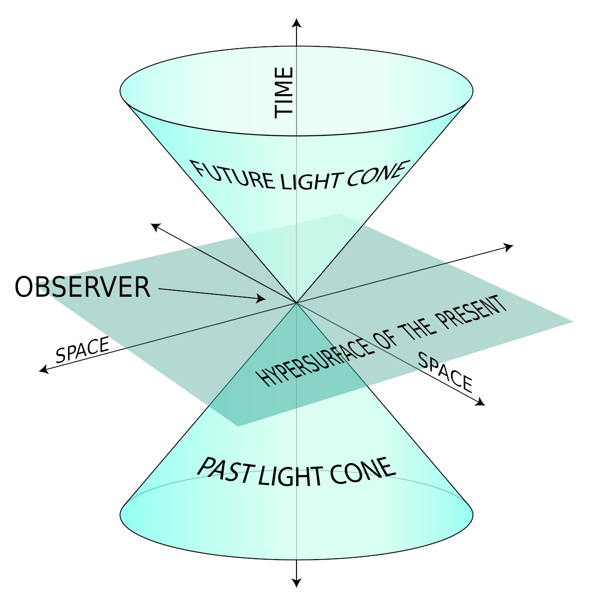

Relativity for Nonphysicists
Monad Gauge
Created: 2021-12-21 Tue 00:35
The Goals
- Symmetry
- Universal speed limit
- No such thing as a universal time
What you need to know
Math
- Basic arithmetic
- Derivatives
- What a group is
- Basic linear algebra
Coordinate System
\begin{equation}
t,x,y,z
\end{equation}
\begin{equation}
x(t),y(t),z(t)
\end{equation}
\(x, y \text{ and } z\) are not special*
\begin{equation}
r(t),\theta(t),\phi(t)
\end{equation}
Inertial Reference Frames
Notation
Notation
\begin{align}
x^\mu = \begin{pmatrix}ct\\x\\y\\z\end{pmatrix}
\end{align}
\begin{align}
x^\mu = \begin{pmatrix}ct\\x\end{pmatrix}
\end{align}
Symmetry
Symmetries determine the allowed physical theories
Newtonian mechanics is a framework
What are the symmetries that Newtonian mechanics preserve?
Newton’s Laws
N1: With no outside forces, objects move at a constant velocity.
\begin{equation}
x(t) = a\cdot t + b
\end{equation}
\begin{equation}
\vec{x}(t) = \vec{a}\cdot t + \vec{b}
\end{equation}
What symmetries preserve straight lines?
- Translations in time \(t' = t + t_0\)
- Translations in space \(\vec{x}' = \vec{x} + \vec{x}_0\)
- Rotations \(\vec{x}' = O\vec{x}\)
- Moving at a constant speed \(\vec{x}' = \vec{x} + \vec{v}t\)
We call these Galilean Transformations
What happens when you use some other transformation?
You’ve been in a car before
N2:
\begin{equation}
\vec{F} = m\vec{a}
\end{equation}
N3: Each action has an equal and opposite reaction
- Implies conservation of momentum
The speed of light is the same in all inertial reference frames
The speed of light appears in Maxwell’s equations
Experimentally, light does not seem to travel in a medium
The solution was to assume that the speed of light is constant
Note, light isn’t special here, it just happens to travel at this speed
What Galilean Transformations respect this?
- ✓ Translations in time \(t' = t + t_0\)
- ✓ Translations in space \(\vec{x}' = \vec{x} + \vec{x}_0\)
- ✓ Rotations \(\vec{x}' = O\vec{x}\)
- ❌ Moving at a constant speed \(\vec{x}' = \vec{x} + \vec{v}t\)
We need to replace constant speed transformations with something else
Lorentz Transformation
\begin{align}
t' = \gamma\left(t - \frac{vx}{c^2}\right)\\
x' = \gamma\left(x-vt\right)\\
\quad\\
\gamma = \frac{1}{\sqrt{1-\frac{v^2}{c^2}}}
\end{align}
\begin{equation}
\end{equation}
\begin{align}
ct' = \gamma\left(ct - \beta x\right)\\
x' = \gamma\left(x-\beta ct\right)\\
\quad\\
\end{align}
\begin{align}
\beta &= \frac{v}{c} &\gamma &= \frac{1}{\sqrt{1-\beta^2}}
\end{align}
\begin{equation}
\begin{pmatrix}ct'\\x'\end{pmatrix} = \begin{pmatrix}\gamma\left(t - \beta x\right)\\\gamma\left(x - \beta ct\right)\end{pmatrix}
\end{equation}
\begin{align}
\begin{pmatrix}ct'\\x'\end{pmatrix} &= \begin{pmatrix}\gamma & -\gamma\beta\\-\gamma\beta & \gamma\end{pmatrix} \begin{pmatrix}ct\\x\end{pmatrix}
\end{align}
\begin{equation}
-1 \lt \beta \lt 1\\
\downarrow\\
\beta = \tanh w
\end{equation}
\begin{align}
\begin{pmatrix}ct'\\x'\end{pmatrix} &= \begin{pmatrix}\cosh w & - \sinh w\\-sinh w & \cosh w\end{pmatrix} \begin{pmatrix}ct\\x\end{pmatrix}
\end{align}
\begin{align}
\begin{pmatrix}x'\\y'\end{pmatrix} &= \begin{pmatrix}\cos \theta & - \sin \theta\\sin \theta & \cos \theta\end{pmatrix} \begin{pmatrix}y\\y\end{pmatrix}
\end{align}
Rotation perserves the distance between two points in space
\begin{equation}
\Delta r^2 = \Delta x^2 + \Delta y^2 + \Delta z^2
\end{equation}
A Lorentz transformation perserves the interval between two points in spacetime
\begin{equation}
\Delta s^2 = c^2\Delta t^2 -\left(\Delta x^2 + \Delta y^2 + \Delta z^2\right)
\end{equation}
There are three types of separated spacetime points:
\begin{equation}
\Delta s^2 = c^2\Delta t^2 -\Delta x^2
\end{equation}
- timelike: \(\Delta s^2 > 0\)
- lightlike: \(\Delta s^2 = 0\)
- spacelike: \(\Delta s^2 < 0\)
Spacelike points are causally separated
- In order to reach one from the other, you’d have to travel faster than the speed of light.
The light cone

Why a speed limit?
- Lorentz transformations are how we got to moving reference frames
- We assume that physical objects have a rest frame
- From there, we only have continuous transformations up to the speed of light (where \(\gamma = \infty\))
- We can approach it from the other side (\(0 \le \frac{1}{\beta} < 1\)), that’s what a tachyon is.
No such thing as a universal time
two events happening in the same place
\begin{align}
\begin{pmatrix}ct_1\\x_1\end{pmatrix} &= \begin{pmatrix}0\\0\end{pmatrix} \\
\\
\begin{pmatrix}ct_2\\x_2\end{pmatrix} &= \begin{pmatrix}\alpha\\0\end{pmatrix}
\end{align}
What happens after a lorentz transformation?
\begin{align}
\begin{pmatrix}ct_1'\\x_1'\end{pmatrix} &= \begin{pmatrix}\gamma & -\gamma\beta\\-\gamma\beta & \gamma\end{pmatrix} \begin{pmatrix}0\\0\end{pmatrix} = \begin{pmatrix}0\\0\end{pmatrix}\\
\\
\begin{pmatrix}ct_2'\\x_2'\end{pmatrix} &= \begin{pmatrix}\gamma & -\gamma\beta\\-\gamma\beta & \gamma\end{pmatrix} \begin{pmatrix}\alpha\\0\end{pmatrix} = \begin{pmatrix}\gamma\alpha\\\gamma\beta\alpha\end{pmatrix}\\
\end{align}
In the moving reference frame, time passes slower!
\[ct_2' = \gamma \alpha > \alpha = ct_2 \] **two events happening at the same time
\begin{align}
\begin{pmatrix}ct_1\\x_1\end{pmatrix} &= \begin{pmatrix}0\\\alpha\end{pmatrix} \\
\\
\begin{pmatrix}ct_2\\x_2\end{pmatrix} &= \begin{pmatrix}0\\-\alpha\end{pmatrix}
\end{align}
What happens after a lorentz transformation?
\begin{align}
\begin{pmatrix}ct_1'\\x_1'\end{pmatrix} &= \begin{pmatrix}\gamma & -\gamma\beta\\-\gamma\beta & \gamma\end{pmatrix} \begin{pmatrix}0\\\alpha\end{pmatrix} = \begin{pmatrix}-\gamma\beta\alpha\\\gamma\alpha\end{pmatrix}\\
\\
\begin{pmatrix}ct_2'\\x_2'\end{pmatrix} &= \begin{pmatrix}\gamma & -\gamma\beta\\-\gamma\beta & \gamma\end{pmatrix} \begin{pmatrix}0\\-\alpha\end{pmatrix} = \begin{pmatrix}\gamma\beta\alpha\\-\gamma\alpha\end{pmatrix}\\
\end{align}
A Lorentz Transformation
\begin{align}
\begin{pmatrix}ct_1'\\x_1'\end{pmatrix} &= \begin{pmatrix}-\gamma\beta\alpha\\\gamma\alpha\end{pmatrix}\\
\\
\begin{pmatrix}ct_2'\\x_2'\end{pmatrix} &= \begin{pmatrix}\gamma\beta\alpha\\-\gamma\alpha\end{pmatrix}\\
\end{align}
What happens if we reverse velocity?
\begin{align}
\begin{pmatrix}ct_1'\\x_1'\end{pmatrix} &= \begin{pmatrix}\gamma\beta\alpha\\-\gamma\alpha\end{pmatrix}\\
\\
\begin{pmatrix}ct_2'\\x_2'\end{pmatrix} &= \begin{pmatrix}-\gamma\beta\alpha\\\gamma\alpha\end{pmatrix}\\
\end{align}
These two events have no canonical order
- depending on the reference frame, their order can change!
- They are truly causally separated!
These two events have no canonical order

The Goals
- Symmetry
- Universal speed limit
- No such thing as a universal time